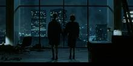
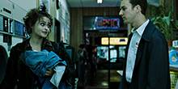
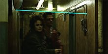
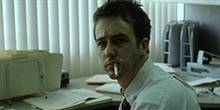
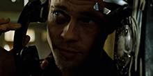

#1 Marla n'existe pas




Marla appelle Jack à sont travail. Il décroche juste un téléphone qui n’a même pas sonné et dit à son boss que c’est important et qu’il doit prendre l’appel.

Tyler empêche Marla de se suicider. Si Marla meurt, Jack meurt, ce qui veut dire que Tyler meurt aussi.